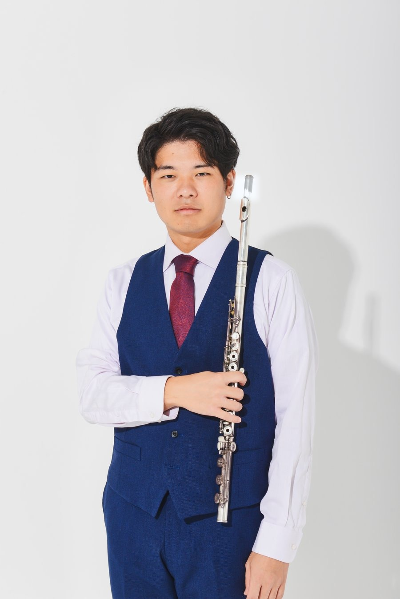
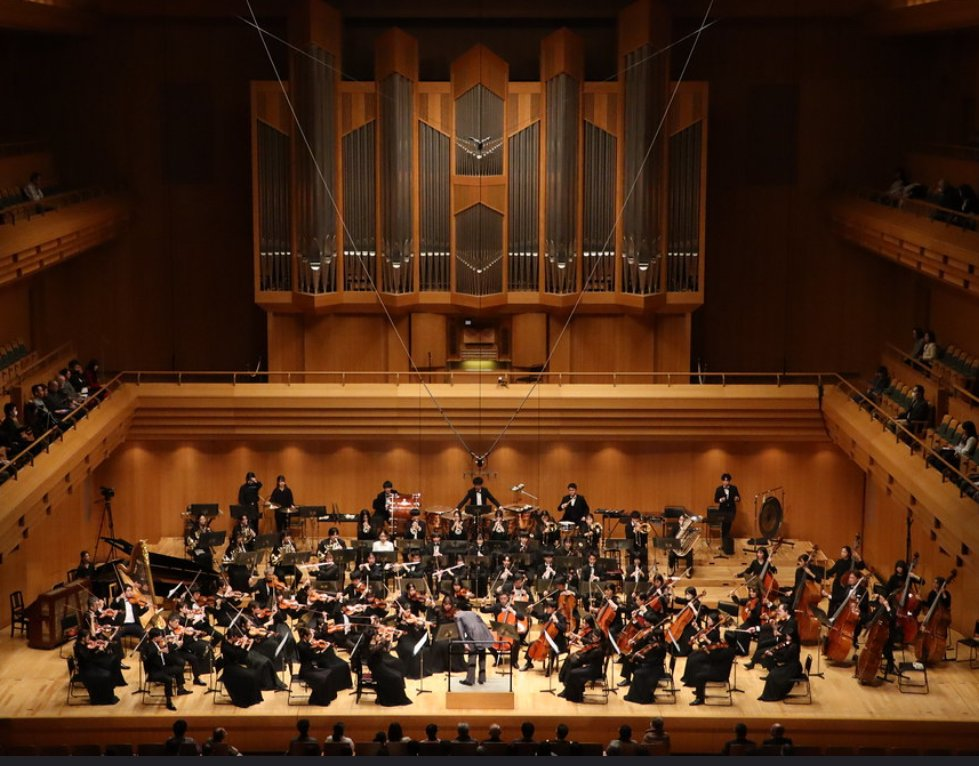

コンクール入賞、そして着実な上達を目指す中学生・高校生のための
フルート個人レッスンを大分県内にて開講しています。
技術を伸ばすことは、当たり前。
集中力、粘り強さ、人前で表現する勇気——これらは、真摯に音楽と向き合えば 自然と育つもの。HIRAI Fl. が目指すのは、その先です。「本物の基準」を伝える ことと、唯一無二の指導法で、生徒の感性をひらき、潜在的な能力を引き出すため、 最短でもう一段上の景色へ導きます。
感性・人間力・技術。この3つが重なり合ったところに、 本当の意味での成長が生まれます。
感性豊かに表現する
感 ＝ 咸 ＋ 心
「心」は、こころ・内側・精神。「咸」は、「すべて」という意味を持つ字。 つまり「感」とは、音や響きを心のすべてで受け取り、それを自分らしい音として どう表現していくか、という働きを表しています。
感覚・感性・感動・直感——良い演奏は、どんな事も純粋に感じる"ハートの力"から生まれます。 これは学ぶ生徒だけでなく、指導する立場としても、日々大切にしている基本の姿勢です。

武蔵野音楽大学(フルート専攻)卒業。同大学は1929年創立、日本国内屈指の音楽大学で、 中でも管楽器専修の実技教育に定評があります。在学中は宮下英司氏に師事。
卒業時は、武蔵野音楽大学の最上位評価を得ております。豊富な演奏経験と専門的な 学びに裏付けられた、確かな知識と技術によって "魔法のように" 1度のレッスンでも 確かな成長を得ていただけます。
基礎の徹底から、コンクールで評価される表現力まで、一人ひとりの目標とペースに 合わせて段階的に指導します。オーケストラや吹奏楽、マーチングの現場で培ってきた 「本物の基準」を、可能性に満ちた学生達に伝えています。

実際に出演したオーケストラのステージ
【オーケストラ演奏・0:50 〜 1:37】
【千葉県の学校で特別授業を行う5名】
【フルートアンサンブル】
※ レッスンは【エリア・最寄り駅】のスタジオにて対面で行います。
※ 学校のテスト期間・大会日程に合わせた振替にも対応しています。
※ 準備・片付けはレッスン時間に含まれます。
【生徒様のコメントをここに記載します。例:音の出し方一つひとつを丁寧に 直していただき、県大会で初めて金賞をいただくことができました。】
【学年・受講歴 例:高校2年・受講2年】【生徒様のコメント例:自分の弱点が分からずに悩んでいましたが、 先生に教わってから練習の仕方そのものが変わりました。】
【学年・受講歴 例:中学3年・受講1年】吹奏楽部・マーチングバンドの外部指導者として、フルートパートの個人指導を 承っております。コンクールに向けた集中指導から、定期的な合奏・パート指導まで、 学校の状況に合わせてご相談ください。